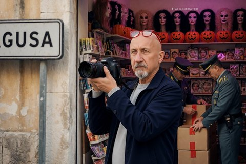
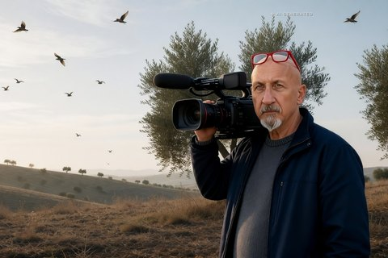
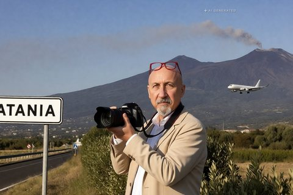
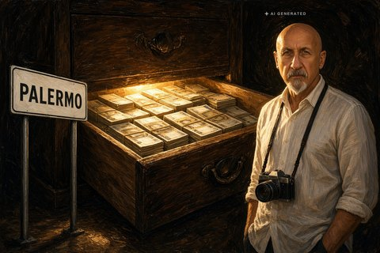
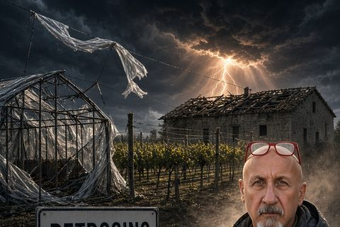

Cronaca · 1 novembre 2026

A Triscina la Guardia di finanza ha trovato tredici bungalow comunali affittati a voce e una strada pubblica chiusa con una catena. Erano costruzioni abusive acquisite al patrimonio del Comune dal 2012.
di Franco Zanghì
Cronaca · 1 novembre 2026
Circa 300 anni di carcere in tutto per il traffico di droga che, secondo l'accusa, dal quartiere di Giostra riforniva Messina, Barcellona, Milazzo e i Nebrodi. La sentenza non è definitiva: resta la Cassazione.
di Franco Zanghì
Cronaca · 1 novembre 2026
Sit-in di Forza Nuova in piazza Lolli con Roberto Fiore, corteo dei centri sociali da piazza don Sturzo. Il corteo prova a deviare verso l'altra piazza: spintoni e due fumogeni, nessun ferito e nessun fermato.
di Franco Zanghì
Sicilia · 1 novembre 2026

Sud chiama Nord ha un accordo nazionale con Fratelli d'Italia, ma Cateno De Luca annuncia in Sicilia un «governo di liberazione» con assessori del Pd e del M5s. Udc, Noi Moderati e Futuro Nazionale chiedono un chiarimento.
di Franco Zanghì
Cronaca · 1 novembre 2026
L'agente della polizia municipale è stato colpito mentre eseguiva un trattamento sanitario obbligatorio in via Raffaello Sanzio. Soccorso dal 118 e portato all'ospedale Civico di Partinico, non è in pericolo di vita.
di Franco Zanghì
Sicilia · 1 novembre 2026

Le sacche per le trasfusioni d'urgenza raggiungeranno Lipari e Vulcano senza aspettare l'aliscafo. L'Asp di Messina è alla firma del contratto. L'idea è di un medico dell'ospedale Barone Romeo, nata da una ragazzina ferita in mare.
di Franco Zanghì
Cronaca · 31 ottobre 2026

Maschere, costumi, parrucche, trucchi e giocattoli senza marchio di conformità, istruzioni in italiano o indicazione dei materiali. Tre negozi controllati, tre titolari segnalati alla Camera di commercio.
di Franco Zanghì
Cronaca · 31 ottobre 2026
Un anno e sei mesi, confermati dalla Cassazione. I fatti risalgono al gennaio 2020 e il procedimento è nato su impulso dei superiori del carabiniere, non da una segnalazione esterna.
di Franco Zanghì
Politica italiana · 31 ottobre 2026

Simbolo nuovo con il suo nome, videomessaggio di Giorgia Meloni, obiettivo dichiarato il 3 per cento. In Sicilia, però, De Luca dice che per la Regione non chiede l'appoggio della coalizione.
di Franco Zanghì
Sicilia · 31 ottobre 2026
Settantatré posti da autista nell'azienda di trasporti della Regione. Un deputato diffonde le immagini di una chat in cui un candidato avrebbe girato agli altri le risposte ottenute da un programma. Il presidente valuta l'esposto.
di Franco Zanghì
Sicilia · 31 ottobre 2026

Accolto il ricorso di due associazioni ambientaliste. Il calendario deve poggiare sul piano faunistico regionale, e l'ultimo valeva fino al 2018: andava rivisto ogni cinque anni e non è mai stato rifatto.
di Franco Zanghì
Cronaca · 31 ottobre 2026
Agenti richiamati dal giorno libero, intervento del reparto specializzato, forze di polizia schierate all'esterno. I sindacati denunciano 600 detenuti in 480 posti e un reparto che chiedono di chiudere da tempo.
di Franco Zanghì
Sicilia · 31 ottobre 2026

Il Parco delle Madonie parla di un numero incontrollabile di animali, un campo scout è stato evacuato nel Ragusano, i sindaci chiedono deroghe. E con il calendario venatorio annullato il problema rischia di crescere.
di Franco Zanghì
Sicilia · 30 ottobre 2026

I cento giorni dati al Consorzio per le autostrade siciliane sono scaduti il 26 ottobre senza le risposte attese. Intanto la Cgil chiede di sospendere il pedaggio dove si viaggia a 60 all'ora.
di Franco Zanghì
Sicilia · 30 ottobre 2026
Il deputato regionale aveva denunciato presunte infiltrazioni mafiose nelle imprese di pulizie degli ospedali palermitani. Sulle sue segnalazioni lavorano la commissione regionale Antimafia e la Guardia di finanza.
di Franco Zanghì
Cronaca · 30 ottobre 2026

Dai crateri sommitali è uscita una nube di cenere alta 4 chilometri e l'avviso per l'aviazione resta al livello più alto. Lo spazio aereo è stato riorganizzato, ma gli arrivi a Fontanarossa sono saliti a 12 l'ora.
di Franco Zanghì
Cronaca · 29 ottobre 2026
Una finta impiegata comunale chiedeva ai parroci di restituire un contributo versato per sbaglio, su una carta ricaricabile. Dei dieci indagati dalla procura di Torino, otto vengono dal Siracusano.
di Franco Zanghì
Sicilia · 28 ottobre 2026

Il ministro per la Protezione civile vorrebbe Fontanarossa lontano dalla cenere dell'Etna. Ma la pista la stanno allungando dov'è, con un progetto da oltre trecento milioni approvato dalla giunta regionale che guidava lui.
di Franco Zanghì
Cronaca · 28 ottobre 2026
Nell'aula bunker di Milano l'uomo che per i pm teneva insieme Cosa nostra, 'ndrangheta e camorra ha cambiato avvocato e ha deciso di collaborare. È il sesto pentito del processo.
di Franco Zanghì
Cronaca · 27 ottobre 2026

Un milione e duecentomila euro in contanti trovati in casa, pensioni di invalidità costruite su certificati firmati senza visita e presidi ortopedici pagati anche in pesce e vino. Il processo a un imprenditore comincia a dicembre.
di Franco Zanghì
Cronaca · 26 ottobre 2026
Una via di fuga sui tetti ricostruita con il drone, impronte su un palo della luce, tracce biologiche sotto le unghie. Gli elementi si accumulano, l'unico indagato resta uno solo, e perfino la sua difesa sostiene che a uccidere sia stato un altro.
di Franco Zanghì
Attualità · 26 ottobre 2026

Gli attacchi jihadisti completati in Europa passano da 6 a 9 e gli arresti da 289 a 347. In Italia, però, gli attentati del 2025 sono tutti di altra matrice. I conti veri, e perché la Sicilia araba non è il racconto che ci hanno insegnato.
di Franco Zanghì
Sicilia · 24 ottobre 2026

Depositate le ragioni per cui i due ricorsi contro le elezioni di Messina sono stati respinti. Sulle firme i giudici scrivono che la norma regionale parla di liste al plurale e non fissa alcun limite. Sulle dimissioni di Basile vale la legge siciliana, non quella dello Stato.
di Franco Zanghì
Cronaca · 24 ottobre 2026

Sotto il mare davanti ad Alicudi ci sono vulcani attivi, e la sequenza sismica in corso non li riguarda. Una faglia e un vulcano fanno tremare la terra in due modi diversi, e sugli strumenti lasciano due firme che i sismologi riconoscono a colpo d'occhio.
di Franco Zanghì
Cronaca · 23 ottobre 2026
Il terremoto delle 12.19, a 9 chilometri di profondità a nord-ovest di Alicudi, è stato avvertito da Palermo a Catania: scuole svuotate, gente in strada, nessun danno a persone. È l'episodio più forte di una sequenza cominciata martedì sera.
di Franco Zanghì
Sicilia · 21 ottobre 2026
Il Comitato trasportatori siciliani ha revocato il fermo dopo il tavolo con Salvini, l'Aias lo prosegue e tiene il blocco al casello di San Gregorio. Fra le due sigle volano accuse che nessun atto ha accertato.
di Franco Zanghì
Sicilia · 21 ottobre 2026
Due ricorsi chiedevano di annullare tutto: il voto, il sindaco, il consiglio comunale. Il Tar di Catania li ha respinti, ma le motivazioni non ci sono ancora, e la spiegazione che oggi tutti ripetono è scritta per un altro comune.
di Franco Zanghì
Sicilia · 10 ottobre 2026

Due trombe marine hanno colpito Marsala e Petrosino il 9 ottobre. Nessun morto, una scuola elementare distrutta con 273 bambini dentro. Sull'attribuzione al riscaldamento globale le fonti scientifiche dicono qualcosa di più preciso di quanto si è letto in quelle ore.
di Franco Zanghì